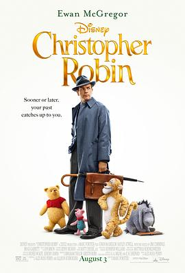

克里斯托弗·罗宾 / Christopher Robin
又名：小熊维尼真人版 / 小熊维尼 / 维尼与我(港) / 挚友·维尼(台) / Winnie The Pooh
其实小猪的缝线无时无刻不在间离着告诉我们这一切都是假的。
作品信息
| 导演 | 马克·福斯特 |
| 编剧 | 亚历克斯·罗斯·派瑞 / 汤姆·麦卡锡 / 艾莉森·施罗德 / 格雷戈·布鲁克 / 马克·斯蒂文·约翰逊 / A·A·米尔恩 / 厄内斯特·谢巴德 |
| 主演 | 伊万·麦克格雷格 / 海莉·阿特维尔 / 勃朗特·卡迈克尔 / 马克·加蒂斯 / 奥利弗·福德·戴维斯 / 阿德里安·斯卡伯勒 / 罗杰·阿什顿-格里菲斯 / 阿曼达·劳伦斯 / 凯蒂·卡迈克尔 / 特里斯坦·斯特罗克 / 保罗·查希迪 / 迈克尔·吉恩 / 舒雅德·法瑞斯 / 马特·贝里 / 西蒙·法纳比 / 麦肯锡·克鲁克 / 吉姆·卡明斯 / 布拉德·加内特 / 尼克·穆罕默德 / 彼得·卡帕尔迪 / 苏菲·奥康内多 / 托比·琼斯 / 李·阿斯奎斯-柯 / 罗伊·贝克 / 金塔雷·贝尼奥拉维特 / 贝恩·科拉科 / 托马斯·派登 / 库姆德潘特 / 理查德·谢尔曼 / 彼得·辛格 / 卡罗尔·斯蒂尔 / 艾薇·维 |
| 类型 | 喜剧 / 动画 / 冒险 |
| 制片国家/地区 | 美国 |
| 语言 | 英语 |
| 上映日期 | 2018-08-03(美国) |
| 片长 | 104分钟 |
| IMDb | tt4575576 |
说过什么
2025-10-28 15:00:31
广播 · 看过 · ★★★☆☆
其实小猪的缝线无时无刻不在间离着告诉我们这一切都是假的。
2025-10-14 09:02:59
广播 · 想看
最后一次看到是 2026-10-07T23:13:00+08:00 · 豆瓣原页